<title>Matching Rows Round 2</title>
<meta name="claude:viewport-fit-sides" content="cover">
<style>
/* Layout: one reading column of numbered questions, each a short statement, its pictures (today, then the drawn proposal), then the recommendation. The same page as round 1, so the two read as one series. */
:root{
  --bg:#f3f5f7; --panel:#ffffff; --ink:#14181d; --ink-2:#4a5560; --edge:#d6dce2; --accent:#0e7fa3; --ring:#c77700; --tag:#e9eef2;
  --f-body:"Inter Tight","Segoe UI",system-ui,-apple-system,sans-serif; --f-head:"Barlow Condensed","Arial Narrow","Segoe UI",sans-serif;
}
@media (prefers-color-scheme: dark){:root:not([data-theme="light"]){--bg:#0d1014;--panel:#161b21;--ink:#e8edf2;--ink-2:#9aa7b3;--edge:#2a323b;--accent:#4cc3e6;--ring:#ffb020;--tag:#1f262e;color-scheme:dark}}
:root[data-theme="dark"]{--bg:#0d1014;--panel:#161b21;--ink:#e8edf2;--ink-2:#9aa7b3;--edge:#2a323b;--accent:#4cc3e6;--ring:#ffb020;--tag:#1f262e;color-scheme:dark}
body{background:var(--bg);color:var(--ink);font:15px/1.55 var(--f-body);padding-left:max(16px,env(safe-area-inset-left,0px));padding-right:max(16px,env(safe-area-inset-right,0px));padding-block:20px 48px}
main{max-width:980px;margin:0 auto;display:flex;flex-direction:column;gap:28px}
h1{font:700 30px/1.1 var(--f-head);letter-spacing:.02em;text-transform:uppercase;margin:0;text-wrap:balance}
h2{font:700 22px/1.2 var(--f-head);letter-spacing:.02em;margin:0;text-wrap:balance;display:flex;gap:10px;align-items:baseline}
h2 .n{background:var(--ring);color:#000;border-radius:7px;padding:0 9px;font-size:18px}
p{margin:0;max-width:68ch}
.lead{color:var(--ink-2)}
section{background:var(--panel);border:1px solid var(--edge);border-radius:14px;padding:18px max(16px,2vw);display:flex;flex-direction:column;gap:14px;min-width:0}
figure{margin:0;display:flex;flex-direction:column;gap:6px;min-width:0}
figure img{width:100%;height:auto;border-radius:8px;border:1px solid var(--edge);cursor:zoom-in;display:block}
figcaption{font-size:13px;color:var(--ink-2)}
.tag{display:inline-block;font:600 11px/1.6 var(--f-body);letter-spacing:.06em;text-transform:uppercase;background:var(--tag);border-radius:5px;padding:0 6px;margin-right:6px;color:var(--ink)}
.tag.drawn{background:var(--accent);color:var(--bg)}
.pair{display:grid;grid-template-columns:repeat(auto-fit,minmax(min(100%,300px),1fr));gap:12px}
.phones{display:grid;grid-template-columns:repeat(auto-fit,minmax(min(100%,180px),1fr));gap:12px}
.rec{background:var(--tag);border-radius:10px;padding:10px 12px;display:flex;flex-direction:column;gap:6px}
.rec b{color:var(--accent)}
ul{margin:0;padding-left:20px;display:flex;flex-direction:column;gap:4px}
.zoom{position:fixed;inset:0;background:rgba(0,0,0,.88);display:flex;align-items:center;justify-content:center;z-index:20;padding:env(safe-area-inset-top,0px) max(8px,env(safe-area-inset-right,0px)) env(safe-area-inset-bottom,0px) max(8px,env(safe-area-inset-left,0px));overflow:auto;cursor:zoom-out}
.zoom img{max-width:none;width:min(1600px,200vw);height:auto}
@media (max-width:600px){.zoom img{width:220vw}}
</style>

<main>
  <header style="display:flex;flex-direction:column;gap:10px">
    <h1>Matching rows — round 2</h1>
    <p class="lead">Eleven differences are left from the look over the whole app, not thirteen as I first counted. Here are four of them: three in how buttons are drawn, and the Tracker's icons. The other seven come in rounds 3 and 4. I've left the Leave War's items for the last round, after its overhaul plan. The orange ring marks the place. <span class="tag drawn">Drawn</span> pictures show my recommendation drawn on the real app; the others are the app as it is today. Tap any picture to enlarge it.</p>
  </header>

  <section>
    <h2>Built — your four answers</h2>
    <p>You answered all four as recommended. These pictures are the built app, not drawings. I pressed every changed button and took these pictures as I went. The pictures further down this page show how it was before.</p>
    <div class="pair">
      <figure>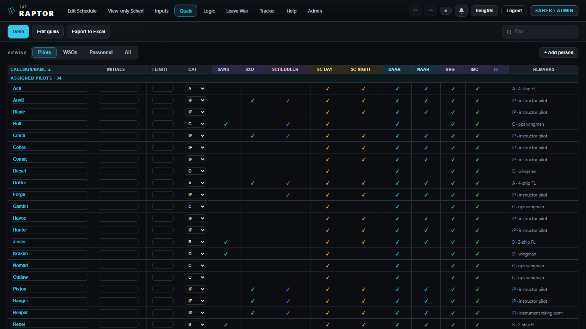<figcaption><span class="tag">Built</span>1 · Quals while editing: Done is the one blue button</figcaption></figure>
      <figure>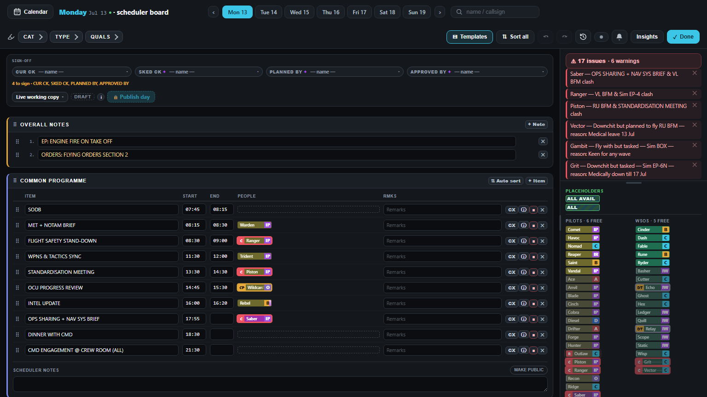<figcaption><span class="tag">Built</span>2 and 3 · The board at your PC's width: icons on the right, the highlighter mark before CAT on the left</figcaption></figure>
    </div>
    <div class="pair">
      <figure>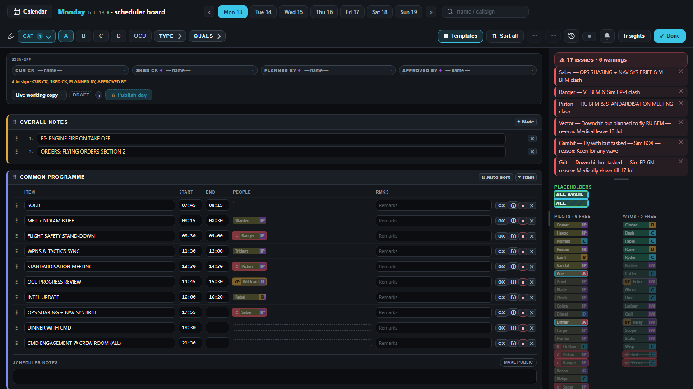<figcaption><span class="tag">Built</span>3 · The row still works: CAT opened, A picked</figcaption></figure>
      <figure>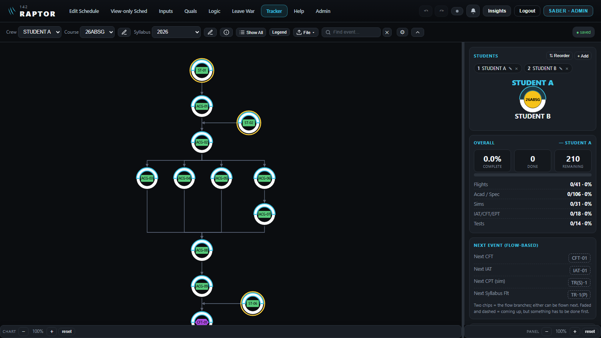<figcaption><span class="tag">Built</span>4 · The Tracker's bar: line icons</figcaption></figure>
    </div>
    <div class="phones">
      <figure>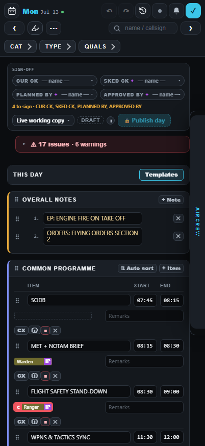<figcaption><span class="tag">Built</span>3 · Phone: the board keeps its button, which folds the row</figcaption></figure>
      <figure>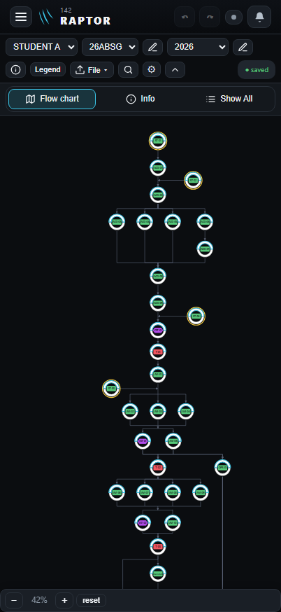<figcaption><span class="tag">Built</span>4 · Phone: the Tracker's tabs in one box</figcaption></figure>
    </div>
  </section>

  <section>
    <h2><span class="n">5</span> Your question: why do the pencils now point the other way?</h2>
    <p>For the Tracker I copied the app's one drawn pencil: the one inside an input window's title box (your 15 Oct ruling, "a line drawing, never the emoji"). That drawing has its tip at the <b>bottom left</b>, as Apple's own pencil icon does. Every other pencil in the app is a typed ✎, like Quals' and Logic's "✎ Edit", and that one has its tip at the <b>bottom right</b>. So the app now has pencils pointing two ways.</p>
    <figure>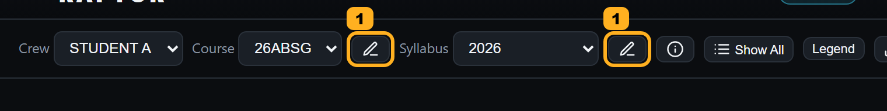<figcaption><span class="tag">Today</span>1 · The Tracker's new pencils: tip bottom left</figcaption></figure>
    <div class="pair">
      <figure>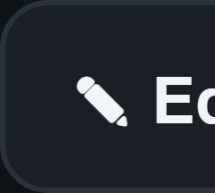<figcaption><span class="tag">Today</span>2 · Quals' "✎ Edit", close up: tip bottom right</figcaption></figure>
      <figure>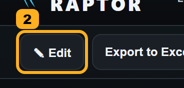<figcaption><span class="tag">Today</span>2 · Where it sits on Quals</figcaption></figure>
    </div>
    <figure><figcaption><span class="tag drawn">Drawn</span>1 · The same drawing mirrored: tip bottom right, like the rest</figcaption></figure>
    <div class="rec">
      <p><b>Recommended:</b> mirror the drawn pencil so its tip points bottom right, on the Tracker and in the input window's title box. Then every pencil in the app points the same way, the way you're used to. The typed ✎ elsewhere stays for now; swapping them all for the drawn one can go in round 3 with the Tracker's other typed marks.</p>
    </div>
  </section>

  <section>
    <h2><span class="n">1</span> Quals: two bright-blue buttons while editing</h2>
    <p>In round 1 you made "Done" the bright-blue button while editing, as on Logic. But "Edit quals" is also bright blue until you press it, from your rule of 5 Aug: blue while it is the button to press. So while editing, two buttons stand side by side in the same blue, and neither stands out as the way to finish. You only see this as an admin.</p>
    <div class="pair">
      <figure>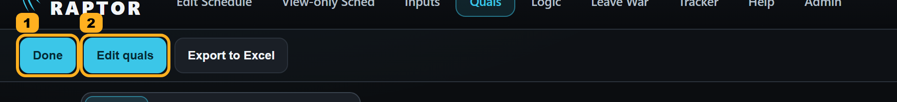<figcaption><span class="tag">Today</span>1 Done and 2 Edit quals, both blue</figcaption></figure>
      <figure>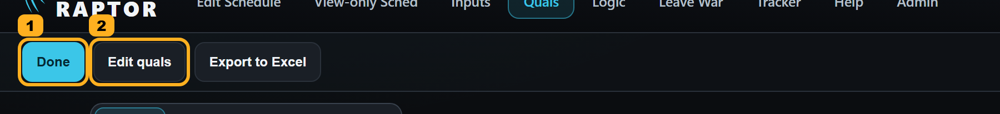<figcaption><span class="tag drawn">Drawn</span>Edit quals plain, Done the one blue</figcaption></figure>
    </div>
    <div class="phones">
      <figure>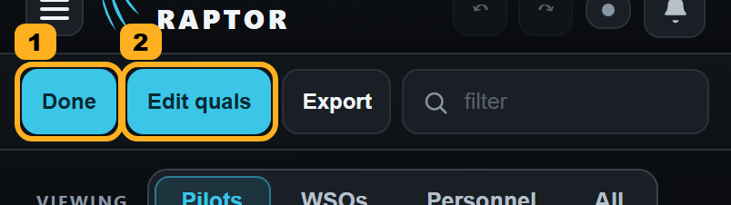<figcaption><span class="tag">Today</span>Phone</figcaption></figure>
      <figure>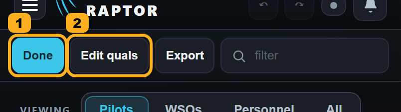<figcaption><span class="tag drawn">Drawn</span>Phone</figcaption></figure>
    </div>
    <div class="pair">
      <figure>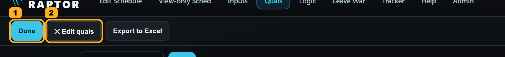<figcaption><span class="tag">Today</span>After pressing it: "✕ Edit quals", plain. This doesn't change.</figcaption></figure>
      <figure>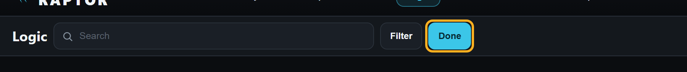<figcaption><span class="tag">Today</span>Logic while editing, for comparison: one blue button</figcaption></figure>
    </div>
    <div class="rec">
      <p><b>Recommended:</b> "Edit quals" in plain grey until pressed, as "✎ Edit" is. Done is then the one blue button, the way out, on Quals as on Logic. This replaces your 5 Aug rule for this one button. Pressing it works as it does now.</p>
    </div>
  </section>

  <section>
    <h2><span class="n">2</span> The Scheduler Board's Undo, Redo, History and sync</h2>
    <p>In round 1 you made every page's top bar show Undo, Redo, History and the sync light as icons only, up to 1599 wide (your PC is 1536). Their names show when you hover. The Scheduler Board has its own bar, and there they are still written out: "Undo", "Redo", "History", "Sync · slow". The same four controls look different depending on whether the board is open.</p>
    <figure>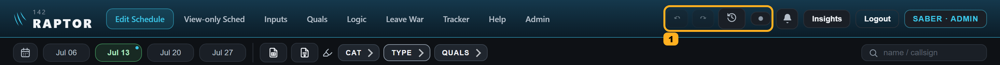<figcaption><span class="tag">Today</span>1 · Every page's top bar at your width: icons</figcaption></figure>
    <figure>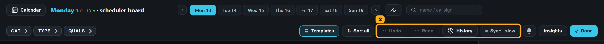<figcaption><span class="tag">Today</span>2 · The Scheduler Board's bar: words</figcaption></figure>
    <figure>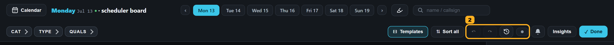<figcaption><span class="tag drawn">Drawn</span>2 · The board drawn as the top bar is</figcaption></figure>
    <div class="rec">
      <p><b>Recommended:</b> the board follows the same rule as the top bar: icons only up to 1599 wide, names on hover, words on a wider screen. The board's bar has room for the words, so this is only about the two matching. It is about the desktop; the board on a phone is left as it is.</p>
    </div>
  </section>

  <section>
    <h2><span class="n">3</span> The highlight button, three ways</h2>
    <p>The highlighter mark appears in three places, drawn three ways:</p>
    <ul>
      <li><b>Edit Schedule's week</b> (1): a plain mark, no box, leading the CAT / TYPE / QUALS row.</li>
      <li><b>The Scheduler Board</b> (2): a boxed button next to the search box, away from its CAT / TYPE / QUALS row. On a desktop, pressing it does nothing you can see. It only folds the row away on a phone.</li>
      <li><b>SANS</b> (3): a button with the word "Highlight". This one does a different job: it picks one SANS man and rings his days, and the word then becomes his callsign.</li>
    </ul>
    <figure>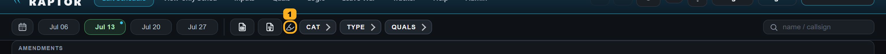<figcaption><span class="tag">Today</span>1 · The week</figcaption></figure>
    <figure>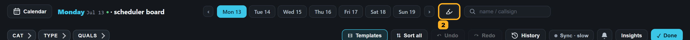<figcaption><span class="tag">Today</span>2 · The board</figcaption></figure>
    <figure>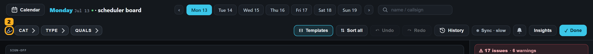<figcaption><span class="tag drawn">Drawn</span>2 · The board drawn as the week is</figcaption></figure>
    <figure>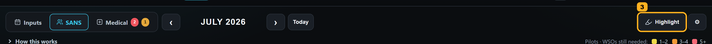<figcaption><span class="tag">Today</span>3 · SANS (left as it is)</figcaption></figure>
    <div class="rec">
      <p><b>Recommended:</b> on a desktop the board does what the week does: the mark leads its CAT / TYPE / QUALS row, and the button that does nothing there goes. On a phone, both keep their button, because there it folds the row away. SANS stays as it is: it does a different job, and its word shows who is picked.</p>
    </div>
  </section>

  <section>
    <h2><span class="n">4</span> The Tracker's typed icons</h2>
    <p>The Tracker came from a separate app. It took on the app's colours, but its icons are still typed characters: the pencils ✎, ⓘ, ☰ before Show All, ⇪ before File, and ^ to hide the bar. Everywhere else the app uses thin line icons. On a phone, its Flow chart / Info / Show All tabs are three separate boxes, and the map on "Flow chart" is an emoji, which an iPhone draws in colour. Every other page's tabs on a phone sit joined in one box, like Inputs / SANS / Medical. You already ruled this for one pencil: the input's title box has a line-drawn pencil, never the emoji one.</p>
    <figure>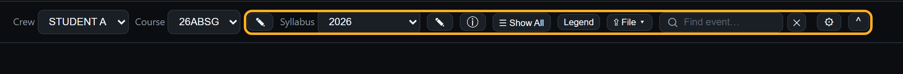<figcaption><span class="tag">Today</span>Desktop: the typed marks</figcaption></figure>
    <figure>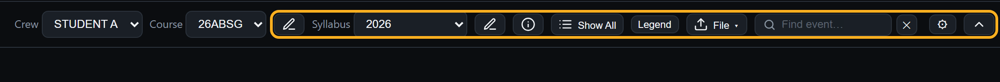<figcaption><span class="tag drawn">Drawn</span>Desktop: the app's line icons</figcaption></figure>
    <div class="phones">
      <figure>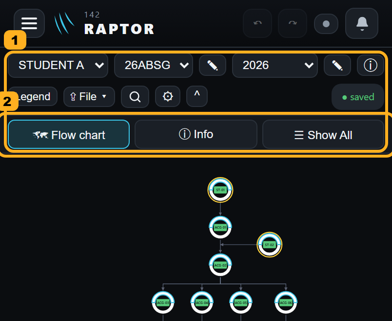<figcaption><span class="tag">Today</span>Phone: 1 the marks, 2 three separate tabs</figcaption></figure>
      <figure>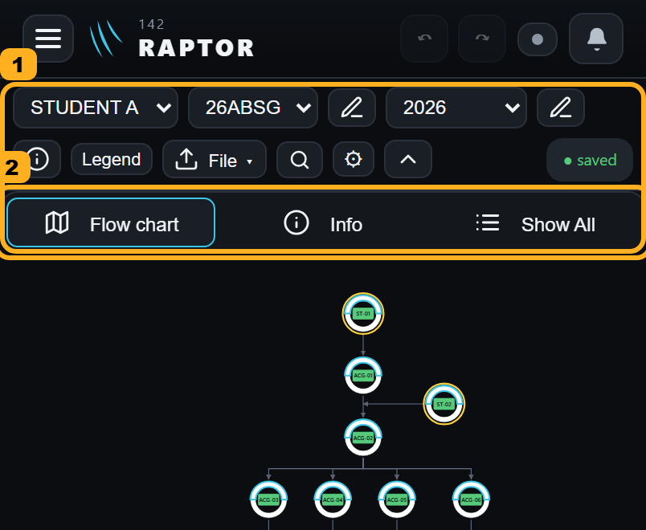<figcaption><span class="tag drawn">Drawn</span>Phone: line icons, the tabs joined</figcaption></figure>
      <figure>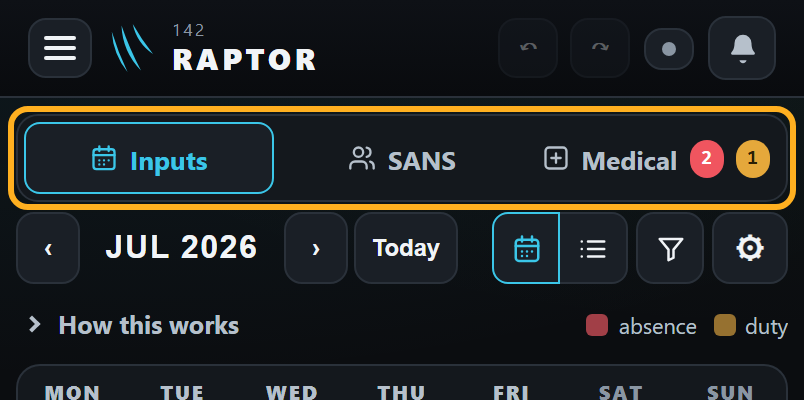<figcaption><span class="tag">Today</span>The Inputs tabs, for comparison</figcaption></figure>
    </div>
    <div class="rec">
      <p><b>Recommended:</b> the app's line icons in place of every typed mark, and on a phone the three view tabs joined in one box like the Inputs tabs. Nothing moves and no button changes what it does. The Tracker's smaller button sizes are a separate question (button heights), coming in round 3.</p>
    </div>
  </section>

  <p class="lead">Next: round 3 — the labels before fields, the Medical tab's row, page titles and button heights — and one more found while checking this build: the Tracker's other typed marks (on each student's name and inside its menus).</p>
</main>

<script>
document.addEventListener('click', e => {
  const z = document.querySelector('.zoom')
  if (z) { z.remove(); return }
  const img = e.target.closest('figure img'); if (!img) return
  const d = document.createElement('div'); d.className = 'zoom'
  const big = document.createElement('img'); big.src = img.src; big.alt = img.alt
  d.appendChild(big); document.body.appendChild(d)
})
document.addEventListener('keydown', e => { if (e.key === 'Escape') document.querySelector('.zoom')?.remove() })
</script>
